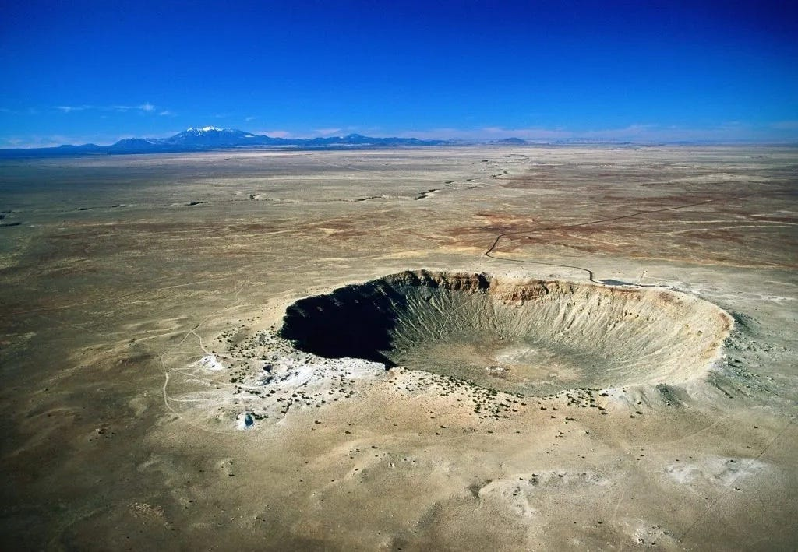
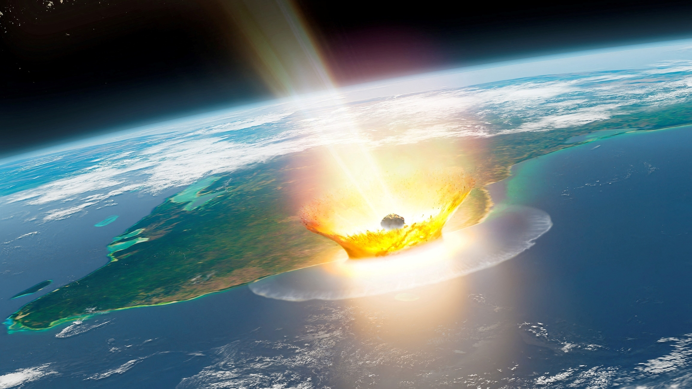

"A good theory explains; a great theory predicts."
Stephen Hawking

အာကာသဆိုင်ရာဖြစ်ရပ်ဆိုသည်မှာ အပြင်ဘက်အာကာသတွင် ဖြစ်ပေါ်နေသော ကြီးမားသည့်ဖြစ် ရပ်အမျိုးမျိုးကိုဆိုလိုခြင်းဖြစ်သည်။ ပုံမှန်အားဖြင့် ကြီးမားသောစွမ်းအင်များ၊ ဆွဲငင်မှုများနှင့် အချိန်များပါ ဝင်သည်။ ထိုဖြစ်ရပ်များတွင် ကြယ်ဖြစ်ပေါ်ခြင်းနှင့်ပျက်သုန်းခြင်းမှစ၍ ကြီးမားသောပေါက်ကွဲမှုများ၊ ရေဒီယေးရှင်း ထွက်ပေါ်မှုများနှင့် အချိန်ကွေးညွတ်ခြင်းများပါဝင်သည်။ အာကာသဆိုင်ရာဖြစ်ရပ်များသည် ကမ္ဘာပေါ်ရှိသာမန်ဖြစ်ရပ်များနှင့်မတူပါ။ ၎င်းတို့သည် အလွန်ကြီးမားသောဖြစ်ရပ်များအပေါ်လည်ပတ်နေ သောကြောင့် စကြာဝဠာတစ်ခုလုံးဧ။်ဖွဲ့စည်းပုံများကိုပုံဖော်ပေးနိုင်ပြီး ဂလက်ဆီများ၊ ဂြိုလ်များနှင့် အသက် ရှင်သန်မှုများအား ဖြစ်ပေါ်စေသော ဖြစ်ရပ်များဖြစ်ကြသည်။
.jpg)
အာကာသဆိုင်ရာဖြစ်ရပ်များသည် စကြာဝဠာဖြစ်ပေါ်လာခြင်းနှင့် ၎င်းကိုယ်တိုင်လည်ပတ်ခြင်းနည်း လမ်းများဖြစ်ကြသည်။ ကြယ်တစ်လုံးပေါက်ကွဲသည့်အခါ၊ ဂလက်ဆီများပေါင်းစည်းသည့်အခါ၊ သို့မဟုတ် ဆွဲငင်အားလှိုင်းများ အာကာသတွင်ပျံ့နှံ့သည့်အခါ ထိုဖြစ်ရပ်များသည် အာကာသပြောင်းလဲမှုများအားဖြစ် ပေါ်စေသည်။ ဖြစ်ရပ်တစ်ခုစီတိုင်းတွင် ဒြပ်စင်အသစ်များဖြစ်ပေါ်ခြင်း၊ ကမ္ဘာအသစ်များဖြစ်ပေါ်ခြင်းနှင့် အလင်းနှစ်ဘီလီလျံနှင့်ချီဖြတ်ပြီးပျံနှံ့လာသောစွမ်းအင်များပါဝင်သည်။သိပ္ပံပညာရှင်များသည်စကြာဝဠာမည်သို့လည်ပတ်ပုံ၊ ကြီးထွားပုံ၊ နှင့်အချိန်လိုက်ပြောင်းလဲပုံများကိုနားလည်ရန် ထိုဖြစ်ရပ်များအားလေ့လာကြ သည်။ ထိုလေ့လာမှုသည် ကမ္ဘာလုံးဆိုင်ရာဧ။်အကြောင်းများ၊ တစ်ကြိမ်တစ်ခါပေါက်ကွဲမှု သို့မဟုတ် လှိုင်း တစ်ချက်ချင်းအလိုက်ပေါက်ကွဲမှုများကိုဖတ်ရှုရသကဲ့သို့ခံစားရစေသည်။
အာကာသဆိုင်ရာဖြစ်ရပ်များကိုထူးခြားစေသောအချက်မှာထိုဖြစ်ရပ်များသည်အသေးငယ်ဆုံးသော အက်တမ်များမှအကြီးမားဆုံးဂလက်ဆီများအထိအရာအားလုံးအားမည်သို့ချိတ်ဆက်ထားခြင်းပင်ဖြစ်သည်။ ၎င်းတို့သည် များစွာသောအလင်းနှစ်များဧ။်အဝေးတွင် ဖြစ်ပေါ်နေကြသော်လည်း ကျွန်ုပ်တို့အပေါ်အကျိုး သက်ရောက်မှုများရှိနိုင်သည်။ ထိုသက်ရောက်မှုများမှာ သင့်ရဲ့လက်ဝတ်ရတာနာဖြစ်သော ရွှေ၊ သင်ရှူရှိုက် နေသော အောက်ဆီဂျင် နှင့် ကြယ်များဆီမှသင်မြင်ရနေသောအလင်းများဖြစ်ပြီး ဤအရာအားလုံးသည် အာကာသဆိုင်ရာဖြစ်ရပ်များကြောင့်ဖြစ်သည်။ အတိုချုံးပြောရလျှင် အာကာသဆိုင်ရာဖြစ်ရပ်များသည် ပြင်ပတွင်ဖြစ်ပျက်နေသောအရာတစ်ခုသာမက ကျွန်ုပ်တို့သည်စကြာဝဠာကြီးဧ။်လည်ပတ်မှုအစိတ်အပိုင်း တစ်ခုဖြစ်ကြောင်းအသိပေးနေသည်။
Supernova 1987A ဆိုသည်မှာ ၂၀ ရာစုဧ။်အံ့ဩဖွယ်အကောင်းဆုံးနှင့် အရေးအပါဆုံးအာကာသ ဆိုင်ရာဖြစ်ရပ်တစ်ခုဖြစ်သည်။ ၎င်းသည် ၁၉၈၇၊ ဖေဖော်ဝါရီလ ၂၃ရက်နေ့တွင်ခန့်မှန်းခြေအလင်းနှစ်ပေါင်း ၁၆၈၀၀၀ အကွာအဝေးရှိ Milky Way ဂလက်ဆီငယ်အနီး Large Magellanic Cloud အတွင်း၌ပေါက်ကွဲ ခဲ့သည်။ ဤပေါက်ကွဲမှုသည် ရက်များစွာကြာအောင်အလွန်တောက်ပလင်းလက်နေခဲ့ပြီး တယ်လီစကုပ်မပါ ပဲနှင့်တောင်မျှ ကမ္ဘာပေါ်မှမြင်တွေ့နိုင်ခဲ့သည်။ ထိုအရာသည် နှစ်၄၀၀ အတွင်းပထမဆုံးအကြိမ်လူသားများ မျက်စိဖြင့်တပ်အပ်မြင်နိုင်ခဲ့သော စူပါနိုဗာတစ်ခုဖြစ်သည်။ ဤဖြစ်ရပ်ကြောင့် သိပ္ပံပညာရှင်များသည် အလွန်ကြီးမားသောကြယ်တစ်လုံးဧ။်ပေါက်ကွဲမှုအား အမှန်တကယ်လေ့လာနိုင်ခဲ့သည်။
Sanduleak -69° 202 သည်အလွန်ကြီးမားသောအပြာရောင်ကြယ်တစ်လုံးဖြစ်ပြီး ၎င်းဧ။်နျူကလီ ယလောင်စာကုန်ဆုံးသွားသောအခါ၌ပေါက်ကွဲခဲ့သည်။ ထိုကြယ်ကြီးပျက်စီးသွားချိန်၌ အလွန်ပြင်းထန်သော ပေါက်ကွဲမှုကိုဖြစ်စေပြီးကြယ်ဧ။် အပြင်ဘက်အလွှာများအား အလွန်လျှင်မြန်သောအရှိန်ဖြင့်အာကာသ ထဲသို့စက္ကန့်ပိုင်းအတွင်းရောက်ရှိစေသည်။ စူပါနိုဗာ ၁၉၈၇A အားထူးခြားစေသောအချက်မှာ ထိုသို့ပေါက်ကွဲ ပျက်စီးနေစဉ် ထွက်ပေါ်လာသော နျူထရီနိုဟုခေါ်သောအမှုန်အပိုင်းစများအား အာကာသယဥ်မှူးများကတွေ့ ရှိခဲ့ကြခြင်းဖြစ်ပြီး စူပါနိုဗာမည်သို့အလုပ်လုပ်ပုံနှင့်ပတ်သက်၍ခန့်မှန်းထားချက်များအားအတည်ပြုနိုင်ခဲ့ကြ သည်။ ဤဖြစ်စဉ်သည် ကျွန်ုပ်တို့ဧ။်နေအဖွဲ့အစည်း အပြင် ပထမဆုံးတွေ့ရှိရသော နျူထရီနိုများဖြစ်ကြပြီး ကြယ်အတွင်းရှိ နျူကလိယဓာတ်ပြုမှုများသည်အာကာသပေါက်ကွဲမှုများအားအမှန်တကယ်ဖြစ်စေကြောင်း သက်သက်ပြနိုင်ခဲ့သည်
Supernova 1987 A သည်ရှားပါးပြီးသေသပ်လှပသောအသွင်ရှိသည်။ ဤသို့ဆိုရခြင်းမှာနှစ်ပေါင်း ထောင်ချီသောကာလများအတွင်း ပေါက်ကွဲမှုမတိုင်ခင်ကြယ်မှထုတ်လွှတ်ခဲ့သော အမှုန်များကြောင့်တောက် ပနေသော အကွင်းများဖြစ်သည်။ စူပါနိုဗာဧ။်လှိုင်းတုံ့ပြန်မှုသည် အမှုန်အစအနဟောင်းများအားဝင်တိုက်မိ သောအခါ ကွင်းများသည်တောက်ပလာခဲ့သည်။ ထိုဖြစ်စဉ်သည်သိပ္ပံပညာရှင်များအတွက် လှိုင်းတုံ့ပြန်ခြင်း များနှင့် ကြယ်များဧ။်အလေးချိန်ဆုံးရှုံးမှုများအားလေ့လာရန်အထောက်အကူဖြစ်ခဲ့သည်။ ဤဖြစ်စဉ်သည် ဆယ်စုနှစ်ကြာအောင်ဖြစ်ပွားနေခဲ့သည်။ ထို့နောက် ပြန့်ကျဲနေသောအမှုန်များသည် ကြားလာကအပိုင်းအ ခြားတွင်မည်သို့အပြန်အလှန်တုံ့ပြန်ကြောင်း အာကာသဆိုင်ရာလေ့လာသူများအား အချိန်နှင့်တပြေးလေ့လာ စေနိုင်သည်။ Hubble, ALMA နှင့်အခြားသောတယ်လီစကုပ်များမှလေ့လာတွေ့ရှိချက်များအရ နျူထရွန် ကြယ် သို့မဟုတ် အလွန်အားနည်းသော pulsarကြယ်များသည် အလယ်ဗဟို၌ဖွဲ့စည်းထားနိုင်ကြောင်း အချက်အလက်များကိုပြသနေသည်။ ထိုအချက်လက်များသည် ပျက်စီးမှုအပြီးတွင်ကျန်ရစ်ခဲ့သော သတ္တု ပစ္စည်းဖြစ်ပြီး ကာလကြာရှည်လေ့လာမှုများဧ။်သဲလွန်စတစ်ခုလည်းဖြစ်သည်။ ဤသို့ဆက်လက်ပြောင်းလဲ နေသော လုပ်ငန်းစဉ်များကြောင့် SN 1987A အားလေ့လာခြင်းသည် ခေတ်သစ်အာကသရူပဗေဒတွင် စူပါနိုဗာများအနက် အနီးကပ်ဆုံးစောင့်ကြည့်အလေ့လာခံရဆုံးသောတစ်ခုဖြစ်သည်။
Chicxulub အာကာသခဲတိုက်ခတ်မှူသည် ကမ္ဘာပေါ်ရှိဘူမိဗေဒသမိုင်းတစ်လျှောက်တွင် အန္တရာယ် အများဆုံးဖြစ်ရပ်များထဲမှတစ်ခုဖြစ်သည်။ လွန်ခဲ့သောနှစ်ပေါင်း ၆၆ မီလီလျံခန့်တွင် အချင်း ၁၀ကီလိုမီတာ ခန့်ကြီးမားသော ဥက္ကာခဲတစ်လုံးသည် ကမ္ဘာအားတစ်စက္ကန့်လျှင် ၂၀ ကီလိုမီတာခန့်အရှိန်ဖြင့် ဦးတည်လာပြီး တိုက်ခတ်ခဲ့သည်။ ထိုအလျှင်နှင့်အလေးချိန်သည် ယခင်ကြုံတွေ့ခဲ့ဖူးသောအရာများနှင့်လုံးဝမတူပဲ အရွေ့ စွမ်းအင် ( kinetic energy )အားထုတ်ပေးသည်။ ဤစွမ်းအင်သည် ယနေ့ခေတ်တွင်ဘီလီလျံချီသောအနုမြူ ဗုံးများတစ်ပြိုင်တည်းပေါက်ကွဲသည်နှင့်ညီမျှပါသည်။ ထိုတိုက်ခတ်ခြင်းသည် ဒိုင်နိုဆောခေတ်ပျက်သုန်းခြင်း နှင့် ခေတ်သစ် သဘာဝစနစ်အားပေါ်ပေါက်လာခြင်းတို့ကြားတွင် အရေးပါခဲ့သောအပြောင်းအလဲတစ်ခု အဖြစ်သတ်မှတ်ခဲ့သည်

ဥက္ကာခဲတိုက်ခတ်မှုသည် အကျယ်အားဖြင့် ၁၅၀ ကီလိုမီတာခန့်နှင့် အနက်အားဖြင့် ၂၀ ကီလိုမီတာရှိ သောချိုင့်ဝှမ်းတစ်ခုအားဖန်တီးခဲ့သည်။ ထိုနေရာကို ယနေ့ခေတ်တွင် ရေနိမ့်ပိုင်း ယုကတန် (Yucatán)ကျွန်း ဆွယ်ဟုခေါ်ကြသည်။ တိုက်ခတ်မှုရလဒ်အဖြစ် ကျောက်များ၊ သမုဒ္ဒရာရေများ နှင့် ၎င်းကိုယ်တိုင်ပင်အချိန် တစ်ခဏအတွင်းအငွေ့ပျံသွားခဲ့သည်။ ထိုနေရာတွင်အပူချိန်သည် နေမျက်နှာပြင်ထက်ပို၍ပြင်းထန်စွာပူပြင်း ပြီး အပူချိန်သည်လည်းမြင့်တက်သွားခဲ့သည်။ ထို့နောက် လှိုင်းတုန့်ပြန်မှုများသည် မြေပြင်နှင့်ပင်လယ်အပြင် ကီလိုမီတာထောင်ချီကွာဝေးသောဒေသများအထိ လှုပ်ခတ်ပြီးမတည်မငြိမ်ဖြစ်စေခဲ့သည်။
တိုက်ခတ်မှုအပြီး ကမ္ဘာတစ်ဝှမ်းလုံးတွင်မတည်မငြိမ် ထိခိုက်ပျက်စီးမှုများဖြစ်ပေါ်ခဲ့သည်။ တိုက် ခတ်မှုမှထွက်ပေါ်လာသောအမှုန်အပိုင်းအစများသည် အပူချိန်ကြောင့် အာကာသထဲထိလွင့်စင်သွားပြီး ကမ္ဘာ ပေါ်သို့ပြန်ကျလာသောအခါတွင် ဒုတိယအကြိမ်မီးမုန်တိုင်းများကိုဖြစ်ပေါ်စေခဲ့သည်။ မီးများသည် ကမ္ဘာတစ် ဝှမ်း ပျံ့နှံ့သွားပြီး သစ်တောကြီးများအား နာရီပိုင်းအတွင်းလောင်ကျွမ်းပျက်စီးစေခဲ့ပါသည်။ တောမီးလောင် ခြင်းမှထွက်ပေါ်လာသော မီးခိုးငွေ့များသည် ကောင်းကင်တစ်ခုလုံးအားမည်းမှောင်စေခဲ့ပြီး ကမ္ဘာ့လေထုအား အန္တရာယ်ဖြစ်စေခဲ့သည်။ ခြုံငုံ၍ကြည့်ရလျှင် ကမ္ဘာကြီးသည် နွေးထွေးပြီးတောက်ပနေသောနေရာတစ်ခုမှ မှောင်မည်းနေသောအာကာသတစ်ခုသဖွယ်ပြောင်းလဲသွားခဲ့ရသည်။
နေရောင်ခြည်သည် ဖုန်မှုန့်များ၊ ဆာလ်ဖာများနှင့် ပြာမှုန်များလေထုအတွင်းပျံ့နှံ့လာသောကြောင့် ကမ္ဘာမြေပေါ်သို့ရောက်ရှိရန်ခက်ခဲခဲ့သည်။ ဤဖြစ်ရပ်ကြောင့် အလင်းဖြင့်အစာချက်သော Photosynthesis လုပ်ငန်းစဉ်ရုတ်တရက်ပျက်စီးသွားခဲ့ပြီး အပင်များ၊ ရေနေသတ္တဝါများနှင့် ၎င်းတို့အားမှီခိုအားထားရသော မည်သည့်အရာမဆို ပြင်းပြင်းထန်ထန်ထိခိုက်စေခဲ့သည်။ ပင်လယ်ရှိအစာကွင်းဆက်များပျက်စီးခဲ့ပြီး ကုန်း မြေပေါ်ရှိ သဘာဝပတ်ဝန်းကျင်စနစ်ကျဆုံးခဲ့ရသည်။ ဤဖြစ်ရပ်ကြောင့် ကမ္ဘာတစ်ဝှမ်းလုံးရှိအပူချိန်များ အလွန်ပြင်းထန်စွာကျဆင်းခဲ့ရပြီး ရာသီဥတုလည်ပတ်ခြင်းအပေါ်ထိခိုက်စေခဲ့သည်။ သက်ရှိမျိုးစိတ်အများ အပြားသည် စွမ်းအင်ခမ်းခြောက်သွားမှုကြောင့် အစာငတ်မွတ်ခေါင်းပါးမှုများကြောင့်သေဆုံးခဲ့ရပြီး၊ တစ်ချို့ မျိုးစိတ်များသည် လေထုအတွင်းရှိအစိတ်ဓာတ်ငွေ့များများကြောင့် အသက်ဆုံးရှုံးရသည်။

အမှောင်ထု၊ အေးခဲမှု၊ အဆိပ်ငွေ့၊ တောမီးနှင့်ငတ်မွတ်များပေါင်းစည်းသွားသောအခါ ဖိအားများတိုး လာပြီး ကမ္ဘာပေါ်ရှိသက်ရှိ ၇၅ ရာခိုင်နှုန်းအားမျိုးတုန်းစေခဲ့သည်။ နှစ်သန်းပေါင်း ၁၆၀ ကျော်ကြာကမ္ဘာမြေ အားကြီးစိုးခဲ့သော ပျံနိုင်စွမ်းမရှိသည့် ဒိုင်နိုဆောများသည် ထိုပတ်ဝန်းကျင်ပြိုကွဲမှုများအပေါ်ခံနိုင်ရည်မရှိပဲ တဖြည်းဖြည်းပျောက်ကွယ်သွားကြသည်။ ထို့အပြင် ပင်လယ်သတ္တဝါမျိုးစိတ်များ၊ အမိုနိုက်များ၊ ငှက်မျိုး စိတ်များနှင့် အပင်မျိုးစိတ်အများအပြားလည်းပျောက်ကွယ်သွားခဲ့သည်။ ဤဖြစ်ရပ်သည် ကမ္ဘာပေါ်ရှိ ဇီဝမျိုးစိတ်စုံလင်မှုအပေါ်အပြောင်းအလဲတစ်ခုဖြစ်စေခဲ့သည်။ ထို့အပြင်မျိုးစိတ်များအတွက် အခြေအနေ အသစ်များနှင့် လိုက်လျောညီထွေမှုပေးနိုင်သောနေရာအသစ်များလည်းဖန်တီးပေးခဲ့သည်။
ထူးခြားသောအချက်မှာ ဤကမ္ဘာပျက်သုန်းခြင်းအဖြစ်အပျက်သည် သဘာဝပတ်ဝန်းကျင်အသစ် တစ်ခုအားဖန်တီးပေးပြီး နို့တိုက်သတ္တဝါမျိုးစိတ်အသစ်များကိုလည်းပေါ်ပေါက်လာစေခဲ့သည်။ ပျက်သုန်းမှု မတိုင်ခင်တွင် နို့တိုက်သတ္တဝါများသည် ဒိုင်နိုဆောများဧ။်ကြီးစိုးမှုအောက်တွင် ပုန်းလျှိုးကွယ်လျှိုးနေခဲ့ကြရ သည်။ ကြီးမားသောမုဆိုးများပျောက်ကွယ်သွားသောအခါ နို့တိုက်မျိုးစိတ်များလျှင်မြန်စွာမျိုးပွားလာခဲ့ပြီး ထောင်ချီသောမျိုးစိတ်အသစ်များဖြစ်ပေါ်လာခဲ့သည်။ နှစ်ပေါင်းများစွာကြာလာသောအခါ ထိုမျိုးစိတ်များမှ မျောက်ဝံများပေါ်ပေါက်လာခဲ့ပြီး လူသားမျိုးစိတ်သို့တဖြည်းဖြည်းဆင့်ကဲပြောင်းလဲလာခဲ့သည်။ Chicxulub ဥက္ကာခဲတိုက်ခတ်မှုသည်သည် ကမ္ဘာကြီးအားအဆုံးသတ်စေခဲ့ခြင်းမဟုတ်ပဲနှင့် ကျွန်ုပ်တို့အခြေအနေသစ် များကိုဖန်တီးပေးခဲ့သည်။

ဤမှတ်တမ်းရုပ်ရှင်တွင် တစ်စက္ကန့်အတွင်း ကီလိုမီတာဆယ်ချီသောအရှိန်ဖြင့် သွားလာနေသည့် ဥက္ကာခဲများ၏ အလွန်ကြီးမားသော ဖျက်ဆီးနိုင်စွမ်း၊ Chicxulub ကဲ့သို့သော သမိုင်းဝင်တိုက်ခတ်မှုများနှင့် ယနေ့ခေတ်တွင် လူသားယဉ်ကျေးမှုကိုပင် ဖျက်ဆီးနိုင်သည့် အန္တရာယ်များကို ဖော်ပြထားသည့်အပြင် စောစီးစွာရှာဖွေတွေ့ရှိခြင်း၊ အာကာသမစ်ရှင်များနှင့် လမ်းကြောင်းပြောင်းလဲနိုင်သော ခေတ်သစ်ဂြိုလ်ကာကွယ်ရေးနည်းလမ်းများဖြင့် ကမ္ဘာပျက်ခြင်းကို တားဆီးနိုင်မည့် လူသားတို့၏ စွမ်းရည်များကိုလည်း အလေးပေးဖော်ပြထားသည်။